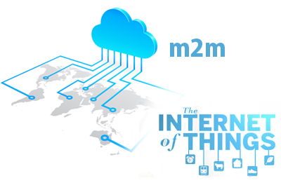

The Customized Global M2M Solution
The Customized Global M2M Solution
 GSMA reported that global M2M is expected to reach 250 million connections by the end of 2014, from a roundup of 195 million connections in 2013. And as various market trends and vertical markets emerge, several other forecasts and predictions of the M2M communications market have been made. Leaders for market research such as IDC and Gartner appears to be in agreement on this forecast.
As the Internet of Things (IoT) continues to expand, consumers and businesses alike, continue to see how this is impacting the various sectors of industry, manufacturing, transportation and even government. In fact, organizations in these sectors were the first to use this technology in improving production and profit. And as it becomes a more tangible reality, more organizations leverage the M2M technology to augment the workforce. M2M devices are now widely used across various sectors, to gather actionable data. The M2M network is not only comprised of devices, but of networks, platforms and applications that allow machines to intelligently exchange information and take action based on algorithms.
And as the M2M industry matures, devices are becoming more powerful and much cheaper, applications are also becoming more complex and diverse. Advances in mobile technology had risen quite rapidly enough to counter possible bandwidth congestion brought by an influx of traffic from machine-to-machine-enabled devices. In the process, both questions and answers were raised. Issues governing the security and privacy of data, possible and undeniable security breaches, technical complexities of interoperability, are a few of the myriad questions that innovators, providers, operators, even consumers have to face. Of course, there are solutions supported by several organizations such as Hyperact that claims to be the answer to interoperability issues between IoT devices, Sigfox's low bandwidth network designed solely for M2M communication, that aims to rectify the current bandwidth congestion, and other innovations such as Cellwize's Centralized SONs for 2G optimization.
But how will M2M guarantee the success of the Internet of Things? According to AT&T, one of the largest multinational telecommunications corporation in the US,"its success depends on identifying the relevant information in context and use it in an effective manner." Businesses must identify a holistic strategy from the start. Focusing only on immediate concerns will only narrow options, and therefore, must be avoided entirely.
Naturally, manufacturers are able to differentiate their services and should be able to accurately rule out technical issues that need to be addressed. However, this foresight should go beyond GPS functionality and embrace a more sophisticated means of monitoring. This encourages companies to build systems that embody predictive maintenance and utilize data collected from the machines more effectively than their rivals. It must be done with a holistic approach.
At this point of M2M development, solutions still need to overcome challenges that may require innovations in several areas such as platforms, software, network devices, storage, even analytics and intelligence, and business processes. Fundamentally, an effective provider must be at the center of an ecosystem of brilliant innovators and developers, working to create a wide range of devices, platforms and applications that can help ensure global connectivity. Most importantly, standardized protocols and platforms are needed to enable a highly integrated M2M communication system and the Internet of Things.
© 2013 Parlacom, All Rights Reserved


 English
English Portuguese
Portuguese